phi = function(w,x) cbind(1, w, x, w*x)
Phi = phi(sam$w, sam$x)
model = lm(y ~ w*x, data=sam)
eps.hat = residuals(model)
# Should be zero (up to rounding)
round(crossprod(Phi, eps.hat) / n, 10) [,1]
0
w 0
x 0
0$$ \newcommand{X}{} \newcommand{Y}{}
$$
We use the same data and model from the previous meetings.
In the previous meeting, we explored what happens when the model is wrong—when the true relationship isn’t in our model class. We saw that least squares still targets something meaningful: the best approximation within the model. Here we express the same ideas in matrix notation, which makes the geometry of residuals and projections more transparent.


The residuals we get when we fit a linear model \(\mathcal{M}\) have an interesting property. They are orthogonal to all curves in the model in the sense that \[ \frac{1}{n}\sum_{i=1}^n \hat \varepsilon_i m(X_i) = 0 \quad \text{ for all } \quad m \in \mathcal{M}. \]
This is implied by the zero-derivative condition that \(\hat \beta\) must satisfy if it minimizes \(\text{MSE}(\beta)\). \[ \begin{aligned} 0 &= \frac{\partial}{\partial b_j} \frac{1}{n}\sum_{i=1}^n \left\{ \sum_{j=0}^p b_j \phi_j(X_i) - Y_i \right\}^2 \bigg\vert_{b=\hat\beta} \\ &= \frac{2}{n}\sum_{i=1}^n \left\{ \sum_{j=0}^p \hat\beta_j \phi_j(X_i) - Y_i \right\}\phi_j(X_i) \\ &= -\frac{2}{n}\sum_{i=1}^n \hat\varepsilon_i \phi_j(X_i) \quad \text{ for all } j. \end{aligned} \] It follows that, taking linear combinations of these zeros, \[ \begin{aligned} 0 &= \frac{1}{n}\sum_{i=1}^n \hat\varepsilon_i \left\{\sum_{j=0}^p \beta_j \phi_j(X_i) \right\} \quad \text{ for all $\beta$} \\ &= \frac{1}{n}\sum_{i=1}^n \hat\varepsilon_i m(X_i) \quad \text{ for all $m \in \mathcal{M}$} \end{aligned} \]
In matrix notation, this is \[ \frac{1}{n} \Phi^T \hat\varepsilon = 0 \qquad \text{for} \qquad \hat\varepsilon = Y - \Phi\hat\beta. \]
Let’s verify this with our data.
phi = function(w,x) cbind(1, w, x, w*x)
Phi = phi(sam$w, sam$x)
model = lm(y ~ w*x, data=sam)
eps.hat = residuals(model)
# Should be zero (up to rounding)
round(crossprod(Phi, eps.hat) / n, 10) [,1]
0
w 0
x 0
0For the linear model (lines), the residuals have zero covariance with \(X_i\). That is, \[ \frac{1}{n}\sum_{i=1}^n \hat\varepsilon_i (X_i - \bar X) = 0 \quad \text{for} \quad \bar X = \frac{1}{n}\sum_{i=1}^n X_i. \] This is an instance of residual orthogonality for \(m(x) = x - \bar{X} \in \mathcal{M}\).
For the piecewise constant function, we have a guarantee that the residuals average to zero on each piece. That is, between the breaks, to the left of the leftmost break, and to the right of the rightmost.
Let \(1_j\) be an indicator for piece \(j\), i.e. a function that is \(1\) on that piece and zero elsewhere. \(1_j\) is piecewise-constant, so plugging this into the orthogonality condition, \[ 0 = \frac{1}{n}\sum_{i=1}^n \hat \varepsilon_i 1_j(X_i) = \frac{1}{n}\sum_{i : X_i \in \text{ piece } j} \hat \varepsilon_i. \]
On each piece, the predictions \(\hat\mu(X_i)\) have the same mean as the observations \(Y_i\).
We’ll start with our least squares estimator. Recall that the coefficients \(\hat\beta\) solving our least squares problem are \[ \hat \beta = \hat\Sigma^{-1}\phi^Y \quad \text{ for } \quad \hat \Sigma = \frac{1}{n}\sum_{i=1}^n \phi(X_i)\phi(X_i)^T \quad \text{ and } \quad \phi^Y = \frac{1}{n}\sum_{i=1}^n \phi(X_i)Y_i. \]
We’ll start with two assumptions that usually aren’t even close to true.
These assumptions are unproblematic in the sense that what they tell us about the statistical behavior of our least squares estimator is true without either of them. What we show about the estimation error \(\hat \mu(x)-\mu(x)\) using these two assumptions (note that the first rules out modeling error so \(\tilde \mu\), the model’s best approximation to \(\mu\), is \(\mu\) itself) is also pretty accurate as a description of the \(\hat \mu(x) - \tilde \mu(x)\) without either of them.
We can break \(\hat\beta\) down into two parts, a signal part and a noise part, corresponding to those two parts of \(Y_i=\mu(X_i) + \varepsilon_i\). \[ \hat \beta = \hat \Sigma^{-1} \frac{1}{n}\sum_{i=1}^n \phi(X_i) \underbrace{\phi(X_i)^T \beta}_{\mu(X_i)} + \hat\Sigma^{-1}\frac{1}{n}\sum_{i=1}^n \phi(X_i)\varepsilon_i \] The first term here is just \(\hat\Sigma^{-1}\hat\Sigma\beta=\beta\), so subtracting it to the left side gives us a formula for our error in estimating the coefficients.
\[ \hat \beta - \beta = \hat\Sigma^{-1}\frac{1}{n}\sum_{i=1}^n \phi(X_i)\varepsilon_i = \frac{1}{n}\sum_{i=1}^n \hat\Sigma^{-1}\phi(X_i) \sigma(X_i) Z_i. \]
What we see is that this error is just an average of random vectors with mean zero. Because thinking about random variables is easier than thinking about random vectors, let’s talk about the dot product of \(\hat\beta - \beta\) with some vector \(u\). This is a pretty reasonable thing to do, as dot products like this are usually what we’re interested in.
What we get is a weighted average of the independent standard normals \(Z_i\) with weights \(a_i\) that are functions of \(u\) and \(X_1 \ldots X_n\). \[ u^T (\hat \beta - \beta) = \frac{1}{n}\sum_{i=1}^n \underbrace{\{u^T \hat\Sigma^{-1}\phi(X_i) \sigma(X_i)\}}_{a_i} Z_i = \frac{1}{n}\sum_{i=1}^n a_i Z_i. \]
Let’s think of \(X_1 \ldots X_n\) as non-random and talk about the distribution of this thing. Because \(\sigma Z\) is normal with mean zero and variance \(\sigma^2\) if \(Z\) is standard normal and \(Z_1+Z_2\) is normal with mean zero and variance \(\text{Var}(Z_1)+\text{Var}(Z_2)\) if \(Z_1\) and \(Z_2\) are independent normals with mean zero, it follows that this is normal with mean zero and variance \((a_1^2 + \ldots + a_n^2)/n^2\).
Let’s work out what that is. \[ \frac{1}{n^2}\sum_{i=1}^n a_i^2 = \frac{1}{n^2}\sum_{i=1}^n \{u^T \hat\Sigma^{-1}\phi(X_i) \sigma(X_i)\} \{ \sigma(X_i) \phi(X_i)^T \hat\Sigma^{-1} u \} = \frac{1}{n} u^T \hat \Sigma^{-1} \underbrace{\frac{1}{n} \sum_{i=1}^n \sigma(X_i)^2 \phi(X_i) \phi(X_i)^T}_{\hat\Sigma_w} \hat \Sigma^{-1} u. \] This variance is proportional to \(u^T V u\) where \(V\), the covariance matrix of \(\hat\beta - \beta\), is a ‘sandwich’ of the weighted covariate covariance \(\hat\Sigma_w\) between two slices of \(\hat\Sigma\)’s inverse.
As a result, \(u^T(\hat \beta - \beta) / \sqrt{u^T V u}\) is normal with mean zero and variance one — it’s standard normal. We call this a Z-statistic. Note that because the standard normal is symmetric around zero, it’s also true that \(u^T(\beta - \hat \beta) / \sqrt{u^T V u}\) is standard normal.
Let’s compute this for our data.
Sigma.hat = crossprod(Phi) / n
Sigma.inv = solve(Sigma.hat)
eps.sq = residuals(model)^2
Sigma.w = crossprod(Phi * sqrt(eps.sq)) / n
V = Sigma.inv %*% Sigma.w %*% Sigma.inv / n
round(V, 6) w x
0.890265 -0.890265 -0.034069 0.034069
w -0.890265 5.528038 0.034069 -0.169381
x -0.034069 0.034069 0.001401 -0.001401
0.034069 -0.169381 -0.001401 0.005555We know that a standard normal random variable \(Z\) is in the interval \([-1,1]\) with probability \(\approx .68\), in the interval \([-2,2]\) with probability \(\approx .95\), and in the interval \([-3,3]\) with probability \(\approx .997\). And it follows that if \((Z-\mu)/\sigma\) is standard normal, then \(Z\) is in the interval \([\mu-\sigma,\mu+\sigma]\) with probability \(\approx .68\), and so on.
Thus, \(u^T\beta\) is in the interval \([u^T\hat\beta - \sqrt{u^T V u}, \ u^T\hat\beta + \sqrt{u^T V u}]\) with probability \(\approx .68\) — this is an \(\approx 68\%\) confidence interval for \(u^T \beta\).
For example, our prediction at \((w,x) = (1,40)\) has standard error
u = c(1, 1, 40, 40) # phi(w=1, x=40)
se = sqrt(drop(t(u) %*% V %*% u))
beta.hat = coef(model)
estimate = sum(u * beta.hat)
data.frame(
estimate = round(estimate, 2),
se = round(se, 2),
ci.lower = round(estimate - 2*se, 2),
ci.upper = round(estimate + 2*se, 2))Exercise. Using the population from this section, run 1000 simulations. In each, draw a sample of size \(n=200\), fit the model, and construct the confidence interval for \(\hat\mu(1,40)\) using the formula above. What fraction of your intervals contain \(\tilde\mu(1,40)\)? Compare these analytic intervals to the bootstrap intervals from Lab 7.
Now let’s think about what happens without weird assumptions.
The coefficients \(\hat\beta\) don’t change. We can still break \(\hat\beta\) down into two parts. To do this, we use the decomposition \(Y_i = \phi(X_i)^T \tilde\beta + \tilde \varepsilon_i\), where \[ \tilde \beta = \arg\min_{\beta} E \{ \phi(X_i)^T \beta - Y_i \}^2 \quad \text{ and } \quad \tilde\varepsilon_i = Y_i - \phi(X_i)^T \tilde \beta. \] And we’ve shown previously that \(\tilde\varepsilon_i\) has a sort of population version of the properties we look for in our residual plots. \[ E\, m(X_i) \tilde\varepsilon_i = 0 \quad \text{ for all curves } \quad m(x)=\phi(X_i)^T \beta \quad \text{ in our model, or equivalently, } E\, \phi(X_i) \tilde\varepsilon_i = 0. \]
In our data, the ‘not necessarily parallel lines’ model is misspecified: the true conditional mean \(\mu(w,x)\) isn’t a linear function of \((w,x)\). The population least squares predictor \(\tilde\mu\) is the best linear approximation to \(\mu\).
# Population LS predictor
pop.model = lm(y ~ w*x, data=pop)
mutilde = function(w,x) predict(pop.model, newdata=data.frame(w=w,x=x))
# True conditional mean
mu.true = function(w,x) predict(lm(y ~ w*factor(x), data=pop), newdata=data.frame(w=w,x=x))
grid = expand.grid(w=0:1, x=c(20,30,40))
grid$mu = mapply(mu.true, grid$w, grid$x)
grid$mutilde = mapply(mutilde, grid$w, grid$x)
grid$bias = grid$mutilde - grid$mu
round(grid, 2)Breaking down \(\hat \beta\), we get \[ \hat \beta = \hat \Sigma^{-1} \frac{1}{n}\sum_{i=1}^n \phi(X_i) \underbrace{\phi(X_i)^T \tilde\beta}_{\tilde\mu(X_i)} + \hat\Sigma^{-1}\frac{1}{n}\sum_{i=1}^n \phi(X_i)\tilde\varepsilon_i. \] The first term here is just \(\hat\Sigma^{-1}\hat\Sigma\tilde\beta=\tilde\beta\), so subtracting it to the left side gives us a formula for our error in estimating these coefficients. \[ \hat \beta - \tilde\beta = \hat\Sigma^{-1}\underbrace{\frac{1}{n}\sum_{i=1}^n \phi(X_i)\tilde\varepsilon_i}_{\phi^{\tilde\varepsilon}}. \]
In the average \(\phi^{\tilde\varepsilon}\) here, the terms \(\phi(X_i)\tilde\varepsilon_i\) are independent and they have mean zero because of this special property of \(\tilde\varepsilon_i\). As a result, by the central limit theorem, we should expect it to behave roughly like an analogous sum in which \(\tilde\varepsilon\) were normal. That’s what makes all this work.
To make sense of this, let’s think about what happens if we replace \(\hat\Sigma\) and \(\phi^{\tilde\varepsilon}\) by their limits. We’ll substitute for \(\hat \Sigma\) the deterministic matrix \(\Sigma = E\, \phi(X_i)\phi(X_i)^T\) that the law of large numbers implies it converges to and substitute for the sum the normal random vector with covariance matrix \((1/n)\Sigma_w\) for \(\Sigma_w = E \{ \phi(X_i)\tilde\varepsilon_i\}^T \{ \phi(X_i)\tilde\varepsilon_i\}\) that the central limit theorem implies that it converges to.
Their product is a normal random vector with covariance matrix \((1/n)\Sigma^{-1} \Sigma_w \Sigma^{-1}\). If we call their product \(\Delta\), then \(u^T \Delta\) is normal with variance \(u^T V u\) for \(V=\frac{1}{n} \Sigma^{-1} \Sigma_w \Sigma^{-1}\).
This means that if we can get away with acting as if \(\hat \Sigma\) and its limit and \(\phi^{\tilde\varepsilon}\) and its limit are equivalent, then \(u^T (\hat\beta - \tilde \beta)\) has exactly the same distribution that \(u^T (\hat\beta -\beta)\) had using our simple assumptions. It’s not going to be exactly the same, but our approximations get increasingly good in large samples.
The fact that our model is wrong, so \(\tilde \mu \neq \mu\), doesn’t change much because \(\phi(X_i)^T \tilde\varepsilon_i\) still has mean zero. It just means that the distribution of \(\hat\mu(x)=\phi(x)^T \hat\beta\) is going to be centered at \(\tilde\mu(x)=\phi(x)^T\tilde\beta\) instead of at \(\mu(x)=E[Y_i \mid X_i=x]\).
The fact that these ‘errors’ \(\tilde \varepsilon_i\) aren’t normal doesn’t change much either because an average of independent random variables with mean zero is always going to be approximately normal.
We can verify this with our simulated samples. The sampling distribution of \(\hat\mu(w,x)\) should be centered at \(\tilde\mu(w,x)\), not at \(\mu(w,x)\).
Exercise. Using the simulation above, construct confidence intervals \(\hat\mu(w,x) \pm 2 \cdot \text{se}\) at each grid point. Check: what fraction contain \(\tilde\mu(w,x)\) (the population LS predictor)? What fraction contain \(\mu(w,x)\) (the true conditional mean)? The first should be close to 95%. The second may not be — explain why.
The variance of linear combinations of independent random variables tends to be small. We saw an example of this in the stability exercises. \[ \begin{aligned} &\text{Var}\left\{ \phi(x)^T \hat \Sigma^{-1} \frac{1}{n}\sum_{i=1}^n \phi(X_i) \varepsilon_i \right\} = \frac{1}{n} \phi(x)^T \hat \Sigma^{-1} \phi(x) \\ & \quad \text{ for } \quad \hat \Sigma = \frac{1}{n}\sum_{i=1}^n \phi(X_i) \phi(X_i)^T. \end{aligned} \] This says these linear combinations tend to be close to their means. We say their distributions concentrate around their means. This is crucial for us. It lets us say: ‘our prediction is roughly this’ instead of ‘our prediction is that it’s somewhere between this and that’.
In our example, we can see this concentration clearly. The sampling distributions of \(\hat\mu(w,x)\) are narrow relative to the range of the data, even though the model is wrong.
In the variance formula, we used \(\sigma(X_i)^2 = E \varepsilon_i^2\). We don’t know that in real data, so let’s try using something we can use. Instead of \(\sigma(X_i)^2\), use the squared residual \(\hat\varepsilon_i^2 = \{ Y_i - \phi(X_i)^T \hat \beta \}^2\).
# Sandwich variance using squared residuals
V.hat = Sigma.inv %*% Sigma.w %*% Sigma.inv / n
# Standard errors for each (w,x) combination
grid$se.sandwich = sapply(1:nrow(grid), function(j) {
u = c(1, grid$w[j], grid$x[j], grid$w[j]*grid$x[j])
sqrt(drop(t(u) %*% V.hat %*% u))
})
grid$se.simulation = apply(sim.muhat, 1, sd)
round(grid[, c('w','x','se.sandwich','se.simulation')], 3)The sandwich standard errors from a single sample approximate the simulation-based standard deviations. This is the practical payoff: we can construct confidence intervals from one dataset.
Exercise. Repeat the coverage simulation at sample sizes \(n = 50, 200, 1000\) using sandwich standard errors. At which sample size does coverage get close to 95%? Try it both with the misspecified model above and with a correctly specified model. How does sample size matter differently in the two cases?